2001 |
зима |
|
|
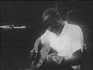  Добавления к видеоархиву Сюжет о легендарном дельта-блюзмене Соне Хаузе (Son House) из телепрограммы "Джазофрения". На Нутодденском блюз-фестивале норвежский блюзмэн Бъёрн Берг (Bjorn Berge), мастер акустического хард-слайд, исполняет старинный блюз Слипи Джона Истса (Sleepy J.Estes) "Направляясь в Брансвилль". |
|
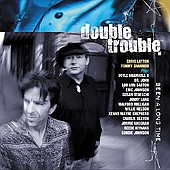 Что новенького на CD? Конечно, группа оставшаяся без солиста, редко выживает. Исключения должны представлять собой нечто, что действительно из ряда вон... Ритм-секция, собранная Стиви Реем Воэном (Stevie Ray Vaughan) в "Дабл-Трабл" (Double Trouble) продолжает существовать. За 10 лет без Стиви басист Томми Шэннон (Tommy Shannon) (он играл в конце 60-х в трио Джонни Уинтера) и барабанщик Крис Лэйтон (Chris Layton) аккомпанировали на записи многих музыкантов, включая корифея современной блюзовой гитары Бадди Гая. Они входили в состав групп "Арк-Энджелз" (Arc Angels) и "Сторивилль" (Storyville). Но сохранили имя своей группы, являя пример уникального аккомпанирующего блюзового тандема. Выход первого альбома под их именем стал подтверждением их высокого жанрового статуса. По словам рецензента "альбом удивит скептиков и осчастливит поклонников". Первый за десятилетие новый альбом, записанный именно "Дабл-Трабл", получил вполне понятное название "Сколько уже прошло...." (Been a Long Time), и ритм-секция пригласила сливки современного техасского блюза и нескольких новоорлеанских корифеев. Четыре из десяти песен написаны Т.Шэнноном и К.Лейтоном. Две из них как раз исполняют самые известные из приглашенных. Прославленные Доктор Джон (Dr.John) и Уилли Нельсон (Willie Nelson) поют в заключительной изысканный любовной песне "Крошка, ты такая одна" (Baby, There's No One Like You). Единственный северянин Джонни Лэнг (Johnny Lang), самый блюзовый новый голос на эстраде, поет про "День сурка" (Ground Hog Day). Молодой гитарный асс Кенни Уэйн Шеппард (Kenny Wayne Shepherd) и техасская певица Сюзан Тадеши (Susan Tedeschi) вместе с "Дабл-трабл" выдали новую громобойную версию "цеппелиновской" тяжелой классики: "Рок-н-ролл" (Rock And Roll). Вообще, стандартов в альбоме не так много, как ожидалось бы. Самый известный - "Она вполне!" (She's Alright), аранжированная для гитарного power-trio и напоминающая хендриксовскую трактовку. Здесь солирует певец-гитарист Дойл Брэмзэлл II (Doyle Bramhall II), сын друга юности братьев Воэн и участник "Арк-Энджелз". Другой член этой же группы, Чарли Секстон (Charlie Sexton), тоже принял участие в записи двух песен. Конечно, для ритм-секции, столь долго работающей самостоятельно, запись собственного альбома и должна была превратиться во встречу со старыми друзьями. Малфорд Миллиган (Malford Milligan), вокалист "Сторивилль", поет песню, которая открывает альбом - "Плачь, небо" (Cry Sky). Название это не может не напомнить о Стиви Рее Воэне, чье место солиста "Дабл-Трабл" никто никогда не займет. Техасская певица Лоу Энн Бартон (Lou Ann Barton), с которой юный Стиви начинал в группе "Тройная угроза" (Tripple Threat) вместе с его братом Джимми Воэном (Jimmie Vaughan) исполняют песню "Среди ночи" (In The Middle Of The Night). Как сказал один из давних фонов SRV: "Да, это не альбом Стиви Рея Воэна. Это альбом "Дабл-Трабл", до краев наполненный отличными песнями и великолепной игрой. Этот альбом должен стать первым в ряду великолепных записей, которых мы в праве ожидать от этого динамичного трио". 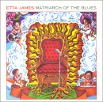 Этта Джеймс, безусловно, один из величайших блюзовых голосов. К сожалению, все ее альбомы эклектичны. И новый, названный грозно и гордо "Матриарх блюза" (Matriarch of the Blues) - не исключение. Тем не менее, голос ее великолепен, ее отчаяние захватывает так же, как окрыляет жизнелюбие. В голосе звучит и подлинная сила, и опытом обретенная мудрость. Ну а в репертуаре - беспроигрышная, но не выигрышная смесь из общеизвестных песен таких квази-блюзовых авторов как Боб Дилан, "Роллинг стоунз", Отис Реддинг... Аранжировки стандартны, а игра аккомпанирующей группы - безлика. Словно для того, чтобы оттенить вокальную индивидуальность 62-летней матриарха блюза. Но она в этом вовсе не нуждается: голос хорош и так.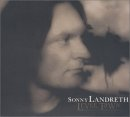 Сонни Ландерс (Sonny Landreth) уже давно считается одним из лидеров современной слайд-гитары: блестящая техника, разнообразие и изобретательность приемов, выразительность игры, индивидуальный саунд - все у него есть. Гостевые выходы на "чужих" альбомах он всегда отыгрывает с блеском. Чтобы утвердится в достигнутом ему нужен достойный альбом. И тут - все те же подводные рифы современного блюза: слабый репертуар и малоэмоциональная игра в студии. Альбом "Город у платины" (Levee Town) - это хороший шаг вперед. Может быть, потому, что С.Ландерс четко определил стилевые рамки. Когда-то играл зайдекоу с самим Клифтоном Шеньером, титулованным Королем зайдекоу - и теперь полный альбом посвятил луизианской музыке. В работе над ним приняли участие два известнейших музыканта, давно признающие талант С.Ландерса. Это прославленный сонгстер Джон Хиат (John Hiatt) и певица-гитаристка Бонни Рэйтт (Bonnie Rait), эксперт в слайдовой технике.И для любителей архивов - великолепные подарки от Вангард (Vanguard) в виде полного собрания студийных записей (для этой фирмы) фолк-блюзмэна Миссиссиппи Джона Харта и молодого Бадди Гая.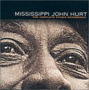 Миссиссиппианин Джон Харт последнюю пластинку записал в конце 20-х годов, и заново был заново открыт публике 30 лет спустя, на волне фолк-блюзаового бума в США. В тот период он много записывался, и три альбома для "Вангард" - лишь небольшой фрагмент его позднего Ренессанса. На момент этих записей он уже перешагнул 70-летний возраст, но, как знают любители фолк-блюза, нисколько не утратил ни в чувственности, ни в технике. Его теплый разговор естественно, как дыхание, переход в пение. Его регтаймовые фигуры удивляют виртуозной сложностью, которая становится заметна только после неоднократного прослушивания - настолько они естественны тоже. Он исполняет и собственные песни, и фолковые стандарты - с нежностью и любовью, или игривостью и лукавством... Чувства эти настолько ярки и красочны, что разнообразие их отблесков вполне сохранила и донесла до наших времен эта старая запись далеко не самой продвинутой в техническом отношении студии. Блюз позднего Харта (а эти записи сделаны незадолго до его смерти в 1966 году) - это совершенно особая интонация. И хорошо, что вместо "Best of…" "Вангард выпустил именно полное собрание - здесь каждый найдет себе - свое. Внешне неброская - внутренне это очень индивидуальная музыка.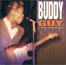 Напротив, другое полное собрание из студии "Вангарда" - это еще очень незрелый блюз. Здесь есть и неопытность, и стилевая разболтанность. Блюзу на пользу выдержка временем. Но юношеская запальчивость - не во вред. В ранних записях ныне общепризнанного корифея жанра Бадди Гая все это есть: и нервозность неуверенности, и неотесанность исполнительского дара, и задиристость юного таланта. Но ранние записи Гая выходили на "Чесс". Для "Вангард" он записывался уже не столь юным, но все еще очень неуверенным в себе музыкантом. Его собрание "вангардовских" записей сделано на рубеже 60-х - 70-х годов; и представляет собой три известных альбома: 1 диск - "Человек и блюз" (A Man and the Blues) 1968г., 2 диск - концертник "Вот он, Бадди Гай!" (This Is Buddy Guy!) того же года, 3 диск - "Остановите самолет" (Hold That Plane) 1972 года. Именно неровность этих работ заставляет отнести эти альбомы к "не лучшим" в наследии Б.Гая. Но то время вообще было переломным для блюза, зато каждый из трех содержит не меньше двух настоящих шедевров, плюс множества добротных блюзов. Эпоха звучит в этих записях: закат золотого века чикагского блюза и взросление тех, кто донес его дух до XXI века. |
|
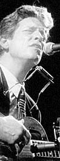 Гнусно ухмыляетсядобрая компания "Гнусная ухмылка" (Wicked Grin) станет двадцать восьмым альбомом в сорокалетней профессиональной карьере певца-гитариста-харписта Джона Хэммонд, мл. 11 песен из 12, вошедших в альбом, принадлежат перу Тома Уэйтса. Союз традиционалиста Хэммонда с классиком альтернативы не так уж удивителен. Во-первых, Хэммонд стремится исполнять классику блюза с современной "актуальной" энергетикой, какая характерна для уэйтсовских песен. Во-вторых, эти двое - старинные друзья. Хэммонд, который на 8 лет старше, помогал Уэйтсу в первых шагах по профессиональной эстраде, в 1974 году Уэйтс "открывал" его концерты. Для альбома Хэммонда 1992 года Уэйтс написал истошный блюз "Никто не подарит мне прощение, только моя бейби" (No One Can Forgive Me But My Baby). Губная гармоника Хэммонда звучит в недавнем 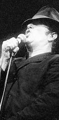 опусе Уэтса "Вариации для мула" (Mule Variations). В сентябре прошлого года Хэммонд принял участие в заключительном из четырех аншлаговых концертов Уэйтса в ньюйоркском Beacon Theater.Но новый альбом представляет неожиданно плотный творческий союз. Большая часть репертуара - это классика Уэйтса; песни вроде "Сердечный приступ и вино" (Heart Attack and Vine) "16 пуль из тридцать-шестого" и другие, не менее известные. Есть несколько новых песен, написанных для альбома Томом Уэйтсом в соавторстве с женой Кэтлин. Сам Уэйтс появится в альбоме в единственной песне, которая не им написана. Он поет вместе с Хэммондом и играет на гитаре, исполняя старинный госпел "Я знаю, я переменился" (I Know I've Been Changed). В записи альбома участвует еще двое бело-блюзовых "шестидесятников:", виртуоз губной гармоники Чарли Масселуайт (Charlie Musselwhite) и бассист Ларри Тейлор (Larry Taylor) из легендарного "Кэннд Хит" (Canned Heat). Первый так же принимал участие в записи альбома "Вариации для мула", а последний был постоянным участником группы Тома Уэйтса в 80-х и начале 90-х. Wicked Grin назначен к выпуску на 13 марта. |
|
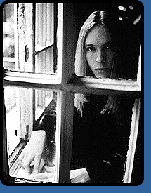 Кенни Уэйн Шеппард -на общественной работе. В день тяжелый, понедельник, 22 января Кенни Уэйн Шеппард с папой Кеном (который приходится ему продюсером) выступали на заседании городского совета своего родного города Шревепорта (штат Луизиана). Своим авторитетом они придали вес проекту г-жи Мэгги Уорвик по созданию городского музея музыки. Все трое являются основателями Фонда развития искусств, музыки и развлечения (по-английски это звучит элегантно: FAME (Foundation for Arts, Music and Entertainment)). Целью организации является помощь музыкальной культуре родного края, сохранение и чествование ее достижений. Кен Шеппард был владельцем нескольких местных музыкальных клубов; усаживая как-то сына на комбик за кулисами во время выступления на сцене Стиви Рея Воэна, он подсадил его на блюз... ну, по крайней мере, на блюз-рок. Шеппард-младший серьезно взялся за гитару, и в 17 лет успешно выпустил дебютный альбом "Ледбетерские высоты" - Ledbetter Heights - это район Шревепорта, названный так в честь гения 12-струнки, фолкблюзового сонгстера Хьюдди Ледбеттера, более известного как Лидбелли. (Лидбелли родился в 1988 году неподалеку от Шревепорта.) В своем общественном выступлении Шеппард сказал: "В 30-е и 40-е этот район, известный теперь как Ледбетерские высоты, представлял собой значительную часть города, и отсюда вышли многие замечательные музыканты. Сейчас этот угасающий регион, в который мы надеемся вдохнуть новую жизнь. Мы собираемся развернуть здесь строительство и открыть новые клубы. Там уже сейчас работают казино на речных деборкадерах, и все расцветает снова. Экономика там снова на подъеме." Под эти экономические приманки Шеппард надеется протолкнуть план строительства музея, который, по его словам: "Воздаст должное вкладу луизианских музыкантов, певцов и композиторов всех стилей, от блюза до джаза, до госпел, до рокабилли." К музею будет вести "Золотая аллея", украшенная бюстами БиБи Кинга, Роберта Джонсона, Уилли Нельсона, Луи Армстронга и, конечно, Лидбелли. Срок закладки первого камня еще не определен, инициаторы собрали пока 250 000 $, а на составление проекта требуется еще столько же. Шеппард заявил, что надеется, что город поучаствует второй половиной. "Мы пока только делаем первые наметки, - сказал Шеппард, - весь проект потребует 350 000 000$. Но надо же как-то начинать" Возможно, шреверпортский горсовет подстегнет тот факт, что в 300 милях от него другой луизианский город всерьез собирается воздвигнуть музей в честь своей музыкальной знаменитости: город Кентвуд чествует свою славную дочь по имени Бритни Спиарз. А 23-летний Кенни Уэйн Шеппард (с супругой, конечно) будет присутствовать 21 февраля на церемонии вручения премий Грэмми. Он уже во второй раз номинирован на Грэмми. В этом году - за пьесу "Электроколыбельная" (Electric Lullaby) в категории "Лучшая инструментальная рок-запись". Его конкурентами будут Джо Сатриани (Joe Satriani), Металлика (Metallica), Фиш (Phish) и старина Питер Фрэмптон (Peter Frampton). |
|
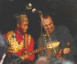 НАШИ НА СЕНЕ В ноябре 2000г. Леван Ломидзе и "Блюз Казенз" с успехом выступили на крупнейшем международном блюз-фестивале "BLUES SUR LA SIENNE" (Блюз на Сенне) во Франции. Фестиваль проводится уже 16 лет. В этом году в фестивале приняли участие MAGIC SLIM, STEVE HILL, KENNY NEAL и LIL'ED & The BLUES IMPERIALS. Кроме сольного выступления, Леван и "Блюз Казенз" джемовал на заключительном концерте с Лил'Эдом. Президент фестиваля Jean Guillermo сказал на большой пресс-конференции по окончанию фестиваля: "Настояшим откровением этого фестиваля были две восточноевропейские группы, приехавшие во Францию впервые: венгры из BLUES FOOLS с MATHIAS PRIBOJSZKI на губной гармошке и русские из BLUES COUSINS с лидер-гитаристом LEVAN LOMIDZE. У меня особые причины радоваться, т.к. я лично внес вклад в это открытие. Я немного рисковал, приглашая русских, которые связались со мной по интернету и прислали мне не очень убедительные видеозапись и CD. Но они покорили публику, всю нашу организационную команду и наших друзей из (журнала) Blues Magazine, которые присутствовали на заключительном концерте. Выступление LIL'ED хорошо отлажено, все шло как маслу, но без той непосредственности, которую продемонстрировали BLUES COUSINS. Вот они "давали от души", выкладывались полностью - и публика это чувствовала!" Все завершилось импровизацией в трех частях, когда LIL'ED остался на сцене вместе с тремя русскими, чтобы исполнить забавный гитарный дуэт". Почитать в рунете... на сайте guitars.ru, у Дмитрия Малолетова.Интервью Николая САДИКОВА (Blues Hammer Band) журналу IN/OUT о группе и о гитарах. О канадском харписте Робине Харпе, выступающем сейчас в московских клубах. |
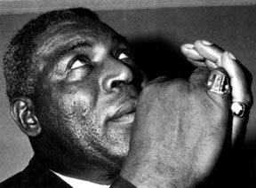
|
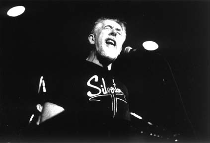
|
|
Бухгалтерский журнал шоу-бизнеса легко подводит итоги года: сумма продаж является непререкаемым показателем. Итак, в последнем году ушедшего века в категории "БЛЮЗ" лучше всего продавались (хотя, может быть, и не были лучшими в этом жанре) следующие 10 альбомов:
BILLBOARD - BLUES TOP TEN of 2000Понятно, что лидерство "Поездки с королем" определяется не вкладом самого короля блюза, а участием мега-звезды Эрика Клэптона. Собственный альбом Кинга прошлого года: "Заниматься любовью тебе на пользу" ("Makin' Love Is Good For You") - остался далек от таких высот и в итоговую десятку вообще не вошел. Хотя общий результат БиБиКинга тоже неплох: втечение 2000го года всего 6 его альбомов (два названных плюс сборники старых записей и альбом 1998 года) поднялись в первую десятку самых продаваемых блюзовых альбомов... Клэптон же баловался блюзом в молодости, не оставляет этого удовольствия и на старости лет. Армия "клэптонманов" определила альбом 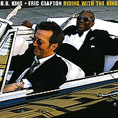 аж на 3-е место общего списка горячих альбомов "Биллбоарда" уже в первую неделю после его выхода. Давненько альбом, хотя бы претендующий на блюзовый статус, не попадал так высоко. Впрочем, и предыдущий столь же высокий подъем блюза к первым местам в коммерческих сводках произвел тот же Клэптон, когда в 1994 году он вместе с участниками маддиуотерсовского блюзбэнда записал альбом "С колыбели" ("From The Cradle"). С 13 июня 2000г., со дня выпуска, клэптон-кинговский альбом возглавил список "горячих" блюзовых альбомов - и вряд ли скоро сойдет с трона "царя блюзовой горы" (разве что Бритни Спиарз тоже решит побаловаться блюзом... молитесь, братья!).Примитивный финансовый критерий внес в биллбоардовскую блюзовую десятку года несколько еще более сомнительных альбомов. Кенни Уэйн Шеппард - хороший гитарист и яростный почитатель SRV, но давно уже никто не считает его блюзмэном. Два блюза в альбоме молодого Джонни Лэнга тоже слабое основание для его участия в блюзовом параде. 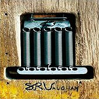 В двухтысячном исполнилось десять лет со дня трагической гибели Стиви Рея Воэна. И в отношении дискографии он повторяет историю своего кумира: после его смерти издано больше его записей, чем при жизни. Сразу три из этих посмертных изданий вошли в десятку: два сборника, приправленных ранее не издававшимися записями, и запись телевизионного концерта в дуэте с Албертом Кингом. Уже под конец года вышла коробка "SRV", в которой три CD с преимущественно ранее не издававшимся материалом и концертным DVD. Несомненно, она будет оставаться в первой десятке на протяжении всего Нового (пока) года.В соответствии с шоу-бизнесовым законом, смерть соул-блюзового певца Джонни Тейлора в мае 2000 году подняла и тираж его прошлогодней пластинки. Десятка просто изобилует прошлогодними релизами, а Джонни Лэнг и Сьэзан Тадеши - вообще 1998 года. Это говорит об отсутствии должной рекламы новых релизов, отчего требуется очень много времени, чтобы публика узнала, распробовала и раскупила "новинку". Ну и есть один "неблюзовик", чью работу приятно видеть в этой десятке. Ветеран кантри-музыки Уилли Нельсон записал альбом дуэтов с блюзмэнами. Имена их, в общем, тоже из этой "горячей" десятки: БиБиКинг, Кенни Уэйн Шеппард, Джонни Лэнг, Сьэзан Тадеши. Плюс Кэб' Мо и Доктор Джон. |
Участники второй биллбоардовской десятки
|
Блюз-чарт от 29 декабря 2000г. - |
Статья о Screamin' Jay HAWKINS, опубликованная в свежем номере журнала "Забриски Rider ". В этом же номере опубликован блюзовый словник, составленный ветераном моcковского блюза Доктором Агроновским. В недалеком будущем словник тоже появится на блюз-ру.
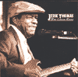 "Ветеранский блюз, как хорошо выдержанный коньяк, пользовался почтением широкой публики и вызывал восторг у пишущей критики"... Альбом 87-летнего певца-гитариста Джесси Томаса "Блюз Грустного Гуся" вышел в 1995 году.Альбом представлен в серии "Золото блюзовой фонотеки". Передача вышла в эфире "Эха Москвы" на Рождество 1998г. |
 |
Из архивов "Всего Этого Блюза": Блюз фирмы "Чесс" из цикла "Золото блюзовой фонотеки". Передача вышла в эфир в декабре 1998г. |
 |
Из архивов "Всего Этого Блюза": Джимми Текери в цикле "Золото блюзовой фонотеки". |

|
24 августа. |